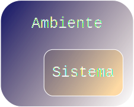
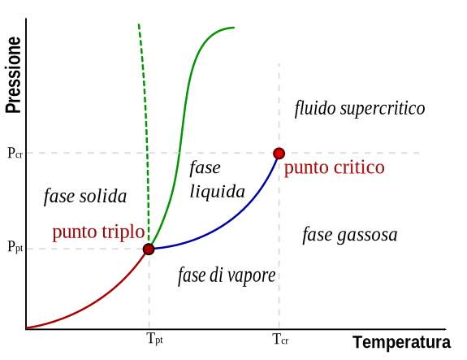
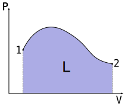
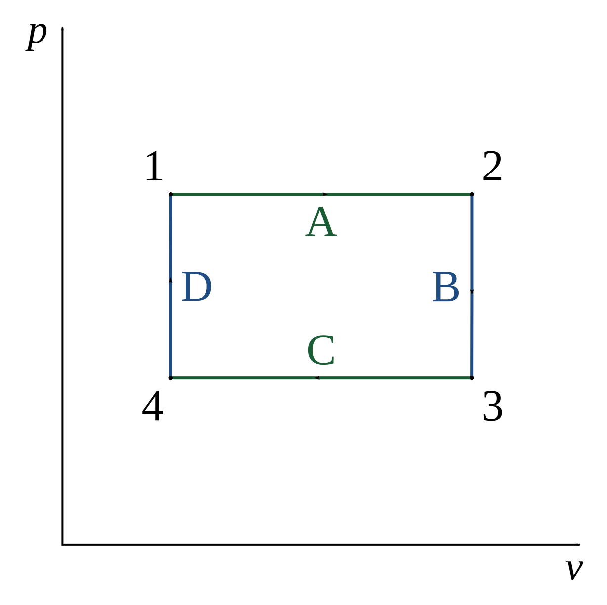

Termodinamica: 2
Sistemi termodinamici
Sistemi termodinamici

Componenti
- Specie chimiche
- Diverse fasi: solido, liquido e gassoso
Comunicazione con l'esterno
- Sistema + Ambiente = Universo
- Aperto, chiuso \( \Leftrightarrow \) scambio di materia
- Isolato \( \Leftrightarrow \) scambio di energia (meccanica o termica)
Variabili termodinamiche
- Estensive: massa, volume
- Intensive: pressione, temperatura
Condizioni di equilibrio
"Un sistema viene detto in equilibrio quanto tutte le sue variabili termodinamiche sono costanti nel tempo"
- Equilibrio meccanico: risultante nulla delle forze esterne agenti sul sistema
- Equilibrio termico: sistema con temperatura fissa e omogenea
- Equilibrio chimico: non si verificano reazioni chimiche nel sistema
Relazione tra le variabili termodinamiche

"Le variabili termodinamiche di stato non sono indipendenti tra di loro"
\( N = 3 - F \)
Trasformazioni termodinamiche: 1
Trasformazioni quasistatiche
\( \Downarrow \)
Infinitamente piccole e lente
Trasformazioni reversibili
\( \Downarrow \)
Quasistatiche e prive di attrito
\( \Downarrow \)
Possono essere percorse a ritroso
Trasformazioni irreversibili
\( \Downarrow \)
Con attrito
Trasformazioni termodinamiche: 2
- Isobara: a pressione costante
- Isocora: a volume costante
- Isoterma: a temperatura costante
- Adiabatica: senza scambio di calore con l'ambiente
Lavoro delle forze di pressione

\[ dL = p dV \]
\[ L = \int_{1}^{2}dL = \int_{V_{1}}^{V_{2}}p dV \]
Lavoro lungo un ciclo
Gas ideali

\( PV = nRT \)
\( n \Rightarrow \) numero di moli
\( R = 8,31 [J/K] \Rightarrow \) costante dei gas ideali
Prima legge della termodinamica
"Dati due stati A e B, la variazione di energia interna \( \Delta U \)è pari alla differenza fra il calore assorbito \( Q \) e il lavoro compiuto \( L \) dal sistema durante la trasformazione"
\( \Delta U = Q - L \)
Prima legge e le trasformazioni
Adiabatica \( \Rightarrow \Delta U = - L \)
Isocora \( \Rightarrow \Delta U = Q \)
Isoterma \( \Rightarrow \Delta U = 0 \Rightarrow Q = L \)
Il ciclo di carnot e l'entropia
\[ \Delta S \geq 0 \]